이 가이드는 어떤 문서일까요?
Google이 사내 Rust 스타일 가이드를 공개했어요. 발표자는 규칙을 셋으로 나눠 봐요. 바로 가져다 써도 좋은 규칙, 코드베이스 종류에 따라 갈리는 규칙, 흔한 Rust 관행과 조금 어긋나는 규칙이에요. 아래 화면처럼 이 문서는 Hacker News에 올라와 389점, 댓글 256개를 받았어요.
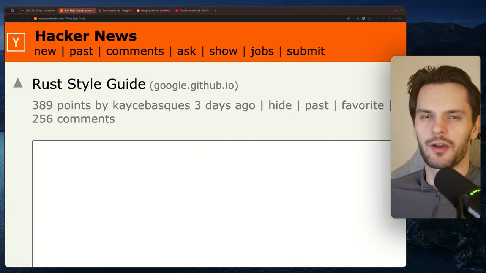
서식이 아니라 설계까지 다뤄요
첫머리에서 가이드는 여기서 말하는 '스타일'이 서식보다 넓다고 밝혀요. 아래 화면 첫 문단 끝의 'guidance on API and implementation design', 곧 API와 구현 설계 지침까지 들어 있어요. 둘째 문단에는 Rust를 쓰는 곳으로 google3, Android, ChromeOS, Fuchsia, Chrome이 나와요. 발표자는 이 가이드가 Android나 Chromium 같은 큰 코드베이스를 위해 만들어졌다는 점을 먼저 짚어요.
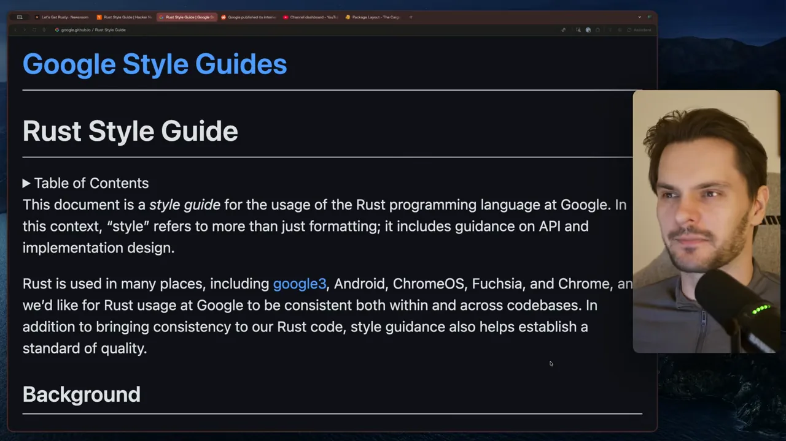
가이드가 내세우는 목표
규칙마다 근거가 되는 목표가 정해져 있어요. 아래 화면에서 굵은 기울임 제목이 그 목표들이에요. 맨 위 강조된 줄이 '쓰기 쉬움보다 읽기 쉬움과 유지보수', 그 아래가 '자동화에 유리하게', '더 넓은 Rust 생태계와 맞게'예요. 발표자는 여기에 '규칙마다 설명할 수 있는 이득이 있어야 한다', '사소한 스타일 다툼을 줄여야 한다'까지 다섯 가지를 꼽아요.
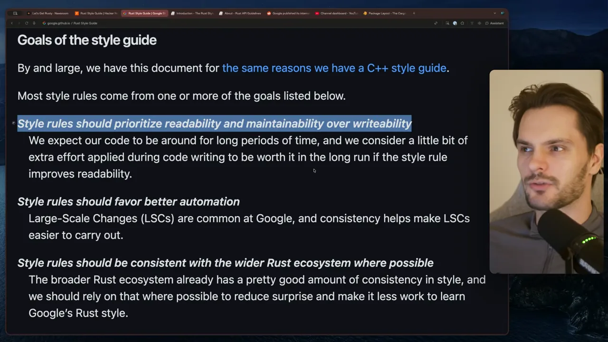
마지막으로 가이드는 공개된 규칙과의 관계를 정해 둬요. 아래 화면처럼 공식 Rust Style Guide와 Rust API Guidelines를 따르되, 이 가이드와 부딪히지 않는 범위까지만이에요. 서식 대부분은 rustfmt가 자동으로 맞춰요.
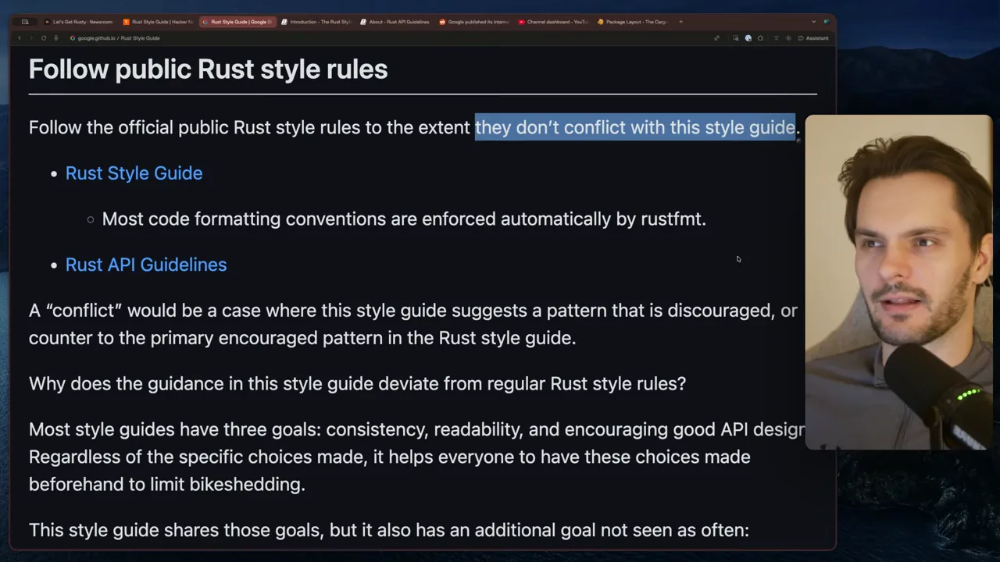
지금 바로 써도 좋은 규칙 세 가지
1. 바뀌지 않는 데이터는 유연한 참조로 받아요
함수가 바뀌지 않는 데이터를 빌려 받을 때는, 그 데이터를 감싼 스마트 포인터나 컨테이너가 아니라 데이터 자체의 참조를 받으라는 규칙이에요. 아래 표의 왼쪽 Use 열이 받을 타입, 가운데 Instead of 열이 피할 타입이에요.
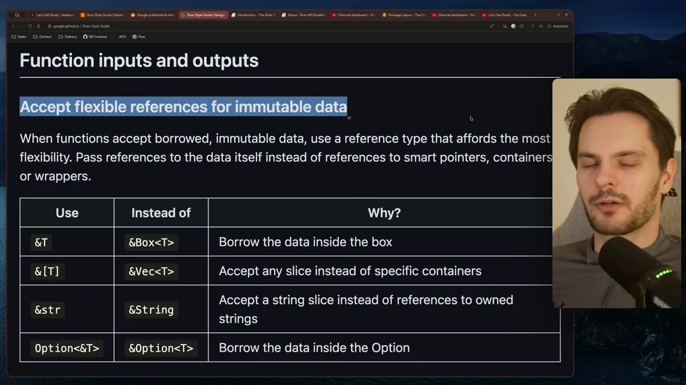
표를 한국어로 옮기면 이래요.
| 이렇게 받아요 | 이것 대신 | 이유 (가이드) |
|---|---|---|
&T | &Box<T> | 상자 안의 데이터를 빌려요 |
&[T] | &Vec<T> | 특정 컨테이너 대신 어떤 슬라이스든 받아요 |
&str | &String | 소유한 문자열의 참조 대신 문자열 슬라이스를 받아요 |
Option<&T> | &Option<T> | Option 안의 데이터를 빌려요 |
이렇게 하면 호출하는 쪽이 데이터를 Vec로 들고 있든 배열로 들고 있든, 복사 없이 그대로 넘길 수 있어요. 가이드는 그래서 함수가 더 범용적이고 빨라진다고 설명해요.
2. 타입 별칭 대신 뉴타입을 써요
아래 화면의 네 줄이 뉴타입을 쓸 경우예요. 의미가 뚜렷하게 다를 때, 그 타입만의 API가 필요할 때, 나중에 속 타입을 바꿀 여지를 남기고 싶을 때, 그리고 마지막 줄처럼 타입끼리 헷갈리기 쉬울 때예요. 마지막 줄의 예가 Date 안의 Day, Month, Year예요.
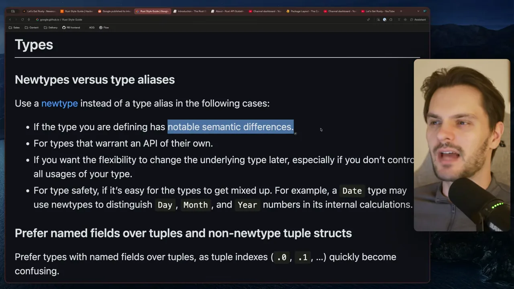
발표자의 예는 날짜와 월을 받는 함수예요. 둘 다 u32면 순서를 바꿔 넣어도 컴파일돼요. type Day = u32; 같은 타입 별칭을 써도 속은 같은 u32라 막을 수 없어요. 뉴타입으로 감싸면 바꿔 넣는 순간 컴파일 오류가 나요.
struct Day(u32);
struct Month(u32);
fn schedule(day: Day, month: Month) { /* ... */ }
schedule(Month(3), Day(14)); // 컴파일 오류: 순서가 바뀌었어요발표자는 뉴타입을 만들 때 입력을 검증할 수도 있어서(예: 1~31만 허용) 더 자주 쓰자고 해요.
3. 확인한 뒤 unwrap하지 말고 패턴 매칭해요
아래 화면의 빨간 칸이 피할 코드예요. option.is_some()으로 확인한 뒤 안에서 unwrap()을 불러요. 지금은 안전하지만, 그 안전이 실행 중 검사에 기대고 있어요. 위쪽 초록 칸처럼 if let Some(value) = option으로 쓰면, 갈래 자체가 값이 있다는 걸 컴파일러에게 증명해요.
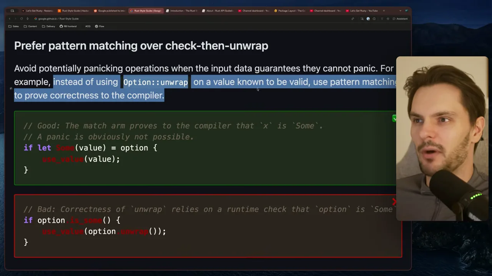
// 좋은 예: match 갈래가 값이 Some임을 컴파일러에 증명해요
if let Some(value) = option {
use_value(value);
}
// 나쁜 예: unwrap의 안전이 실행 중 is_some() 검사에 기대요
if option.is_some() {
use_value(option.unwrap());
}나쁜 예가 위험한 이유는 나중이에요. 누군가 if 검사를 지우거나, 검사와 unwrap() 사이에 코드를 끼워 넣으면 패닉이 날 수 있어요. 패턴 매칭으로 쓰면 그런 실수가 끼어들 자리가 없어요.
의견이 갈리는 규칙: Option으로 실패 알리기, Rc·Arc 피하기
단순한 실패는 Option으로 알려요
가이드는 API 약속에 맞춰 Option, Result, panic! 중 하나를 고르라고 해요. 아래 화면에서 강조된 문단이 Option 규칙이에요. 원인이 뻔하고 호출자가 더 알아서 얻을 게 없는 단순한 실패, 예를 들어 값이 없거나 파싱이 안 맞는 경우에 써요. 초록 칸의 예가 fn checked_add(a: u32, b: u32) -> Option<u32>예요. 실패할 이유가 정수 오버플로 하나뿐이라 None이면 충분하다는 거예요.
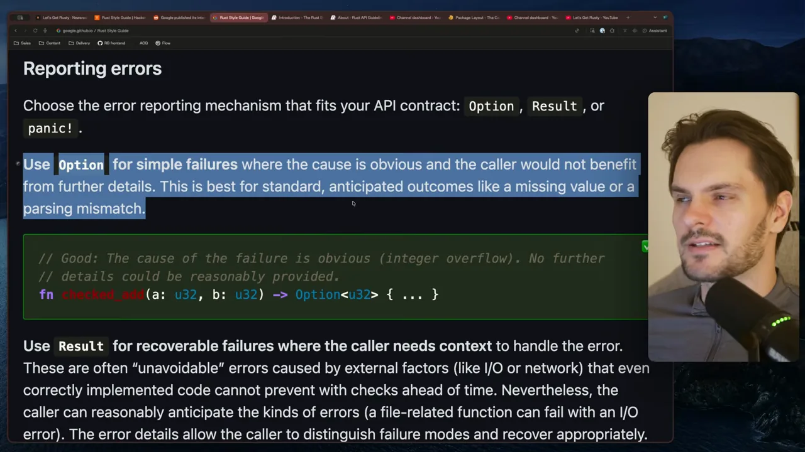
이건 표준 라이브러리와도 같아요. 아래는 u32 문서의 checked_add예요. 설명에 '오버플로가 나면 None을 돌려준다'고 적혀 있고, 아래쪽 strict_add는 오버플로 때 패닉하는 짝이에요.
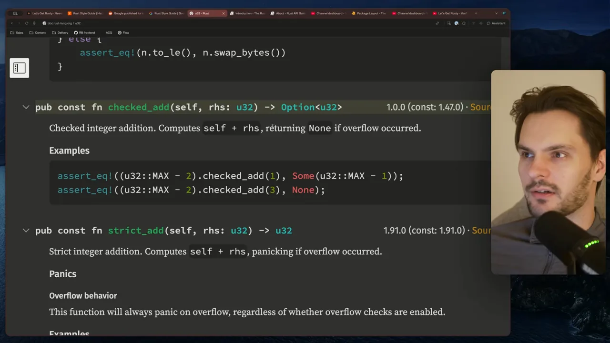
발표자는 생각이 달라요. Option은 '값이 없을 수 있다', Result는 '오류가 났을 수 있다'는 뜻이라 의미가 달라요. 그래서 이런 경우에도 필드 없는 유닛 구조체를 오류 타입으로 두고 Result를 돌려주는 편을 좋아해요. 영상은 말로만 설명해서, 그 모양을 옮기면 이래요.
struct Overflow; // 필드 없는 유닛 구조체
fn checked_add(a: u32, b: u32) -> Result<u32, Overflow> { /* ... */ }나머지 오류 지침에는 동의해요. 아래 화면처럼 호출자가 맥락이 필요한 회복 가능한 오류에는 Result를 써요. 예가 파일을 열 때의 Result<File, io::Error>예요. 파일이 없는지, 권한이 없는지에 따라 호출자가 다르게 대응해야 하니까요. 그 아래 panic!은 불변식이 깨진 버그를 알리는 데 써요.
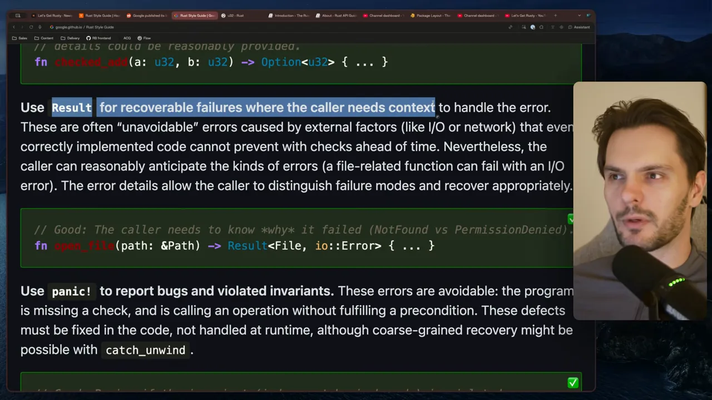
Rc와 Arc를 기본으로 피해요
또 하나 의견이 갈리는 규칙이에요. 아래 화면의 강조된 줄처럼, 메모리 관리는 Rc·Arc보다 단일 소유와 빌림을 먼저 쓰라고 해요. Rationale(이유) 문단은 이 스마트 포인터들이 실행 중 비용과 그 나름의 복잡함을 더하고, 다른 언어에서 온 개발자가 너무 쉽게 꺼내 쓴다고 적어요. Exception(예외)은 소유와 빌림만으로 짜면 쓰고 이해하고 고치기에 지나치게 복잡해질 때예요. 이건 코드 리뷰에서 판단해요.
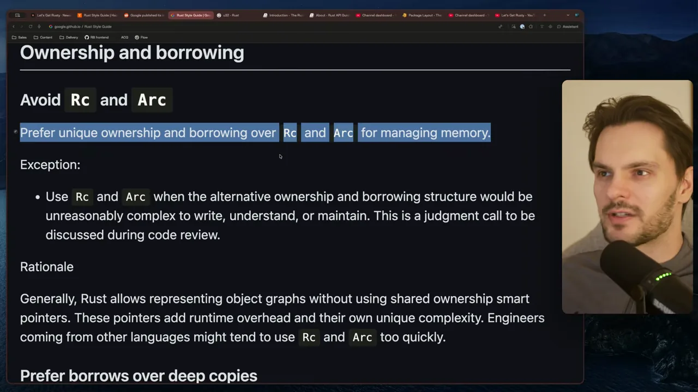
발표자는 이 규칙이 흥미롭다고 해요. Rust를 처음 배울 때는 소유권을 나눠 갖게 해 주는 Rc·Arc가 큰 도움이 돼요. 이걸 기본으로 피하게 하면 새 엔지니어가 적응하기 더 힘들 거라고 봐요.
공개 enum에 #[non_exhaustive]를 붙여야 할까요?
가장 큰 논쟁을 부른 규칙이에요. 아래 화면 맨 위 강조된 문장처럼, 다른 팀이 쓰는 공개 API의 enum에는 #[non_exhaustive]를 붙이라고 해요. 이걸 붙이면 그 enum을 match하는 쪽은 앞으로 늘어날 변형에 대비해 와일드카드 갈래(_ => ...)를 꼭 넣어야 해요.
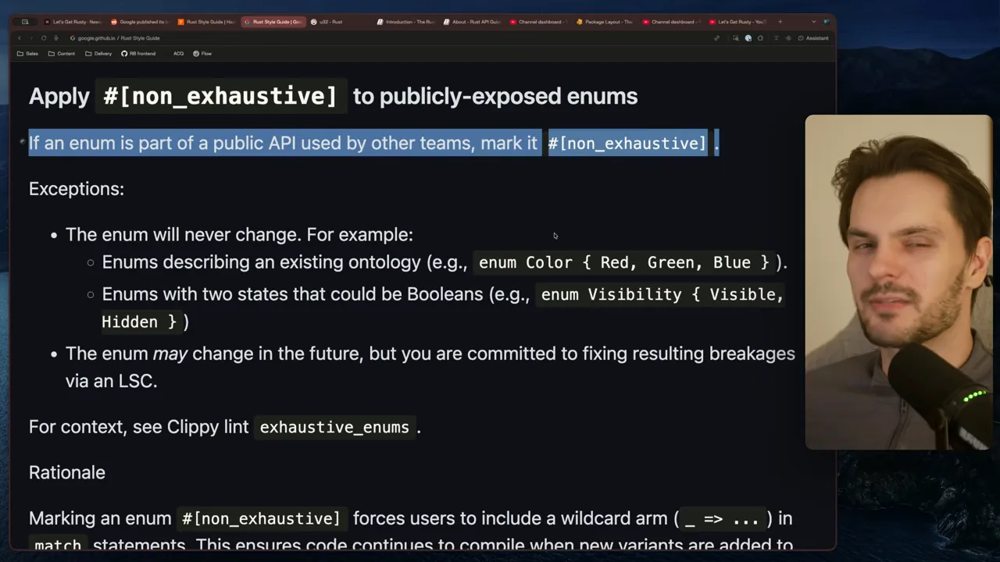
예외는 두 가지예요. 첫째, enum이 절대 바뀌지 않을 때예요. 빨강·초록·파랑 같은 이미 정해진 분류나, 보이기·숨기기처럼 bool로도 쓸 수 있는 두 상태가 그래요. 둘째, 바뀔 수는 있지만 그로 인해 깨지는 곳을 LSC(Large-Scale Change)로 고치겠다고 약속한 enum이에요.
이유는 아래 화면의 강조된 두 줄이에요. 나중에 enum에 변형이 추가돼도 코드가 계속 컴파일되게 하려는 거예요. 이 규칙은 팀 경계를 넘나드는 enum에 특히 중요해요. 깨지는 범위가 클 수 있기 때문이에요. 몇 군데서만 쓰는 enum은 크게 깨질 일이 없으니 이 규칙을 무시해도 된다고 적혀 있어요.
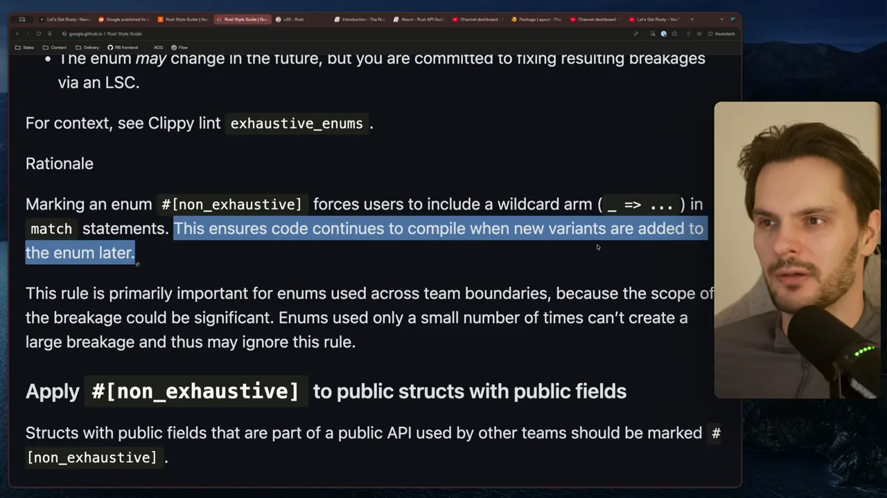
Hacker News에서 벌어진 논쟁
Hacker News의 맨 위 댓글이 바로 이 규칙을 다뤄요. 아래 화면 위쪽 댓글의 강조된 부분이 요지예요. enum의 큰 힘은 새 경우를 추가했을 때 컴파일러가 고쳐야 할 match를 모두 짚어 준다는 데 있다는 거예요. 발표자도 같은 걱정을 해요.
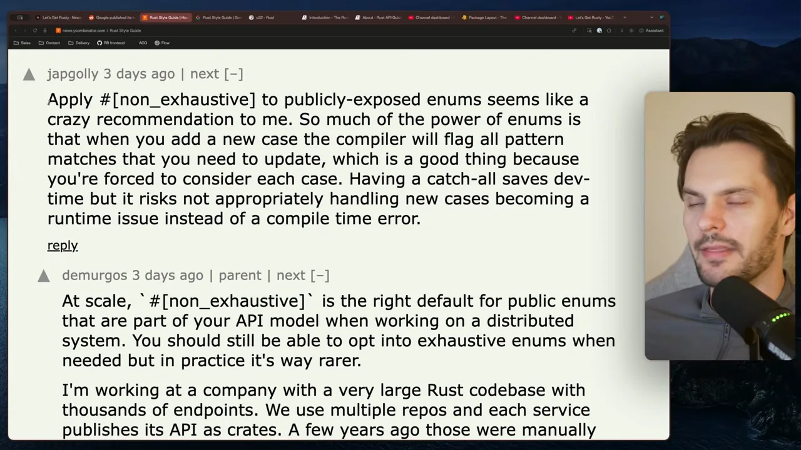
This seems like a crazy recommendation to me because a lot of the power of enums is having the compiler tell you when you're not handling all the possible variants.
이건 미친 권고 같아요. enum의 힘 상당 부분은 가능한 변형을 다 처리하지 않았을 때 컴파일러가 알려 주는 데 있거든요.
— 영상 07:42 (발표자가 Hacker News 댓글을 읽으며)
답글은 규칙 편을 들어요. 아래 화면의 강조된 첫 문장처럼, 큰 규모의 분산 시스템에서 API 모델의 일부인 공개 enum이라면 #[non_exhaustive]가 맞는 기본값이라는 거예요. 필요할 때 빠짐없는 enum을 고를 수는 있지만 실제로는 훨씬 드물다고 해요.
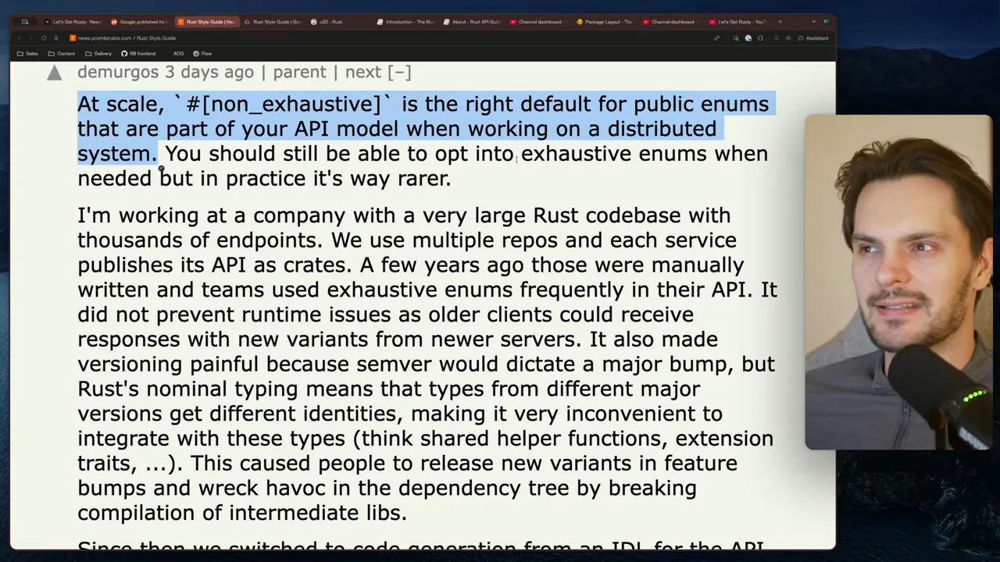
그 경험의 요지는 두 가지예요. 아래 화면의 강조된 줄이 둘째 문제예요.
- 런타임 문제를 못 막았어요. 공개 API에 빠짐없는 enum을 썼지만, 새 서버가 보낸 새 변형을 옛 클라이언트가 받는 일은 컴파일러가 막아 주지 못했어요.
- 버전 관리가 괴로웠어요. 공개 enum에 변형 하나만 추가해도 semver상 메이저 버전을 올려야 했어요.
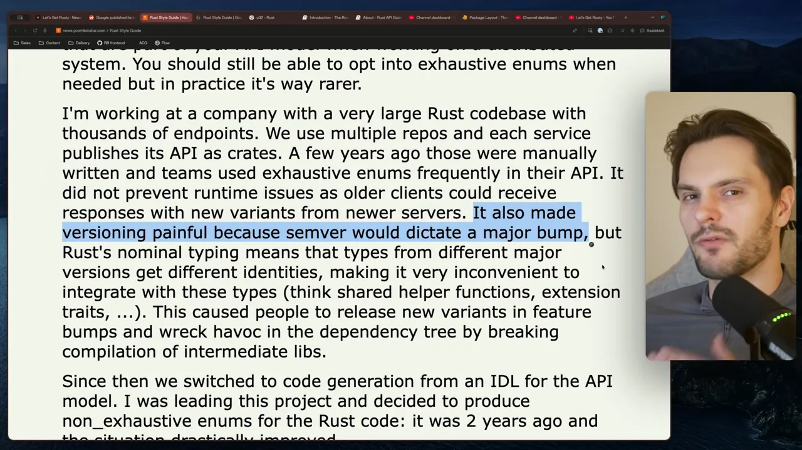
첫째 문제를 그림으로 옮기면 이래요. 컴파일 시점의 검사는 같은 빌드 안에서만 통해요. 서로 다른 시점에 배포된 서버와 클라이언트 사이에서는 도움이 안 돼요.
sequenceDiagram participant C as 옛 클라이언트 (변형 A, B만 앎) participant S as 새 서버 (변형 C 추가) C->>S: 요청 S-->>C: 응답에 변형 C Note over C: 빠짐없는 match라도
C는 처리할 갈래가 없어요
Chromium은 크레이트를 작게 쪼개요
마지막은 Chromium 코드베이스에만 해당하는 규칙이에요. 제목 옆 [chrome] 표시가 그 뜻이에요. 아래 화면의 강조된 문장처럼, Chromium에서는 크레이트를 작게 만들라고 해요. 이상적으로는 꼭 그럴 필요는 없지만 하나의 추상화를 담은 파일 하나 크기예요. 여러 작은 크레이트로 나눌 수 있으면 나누라고 해요.
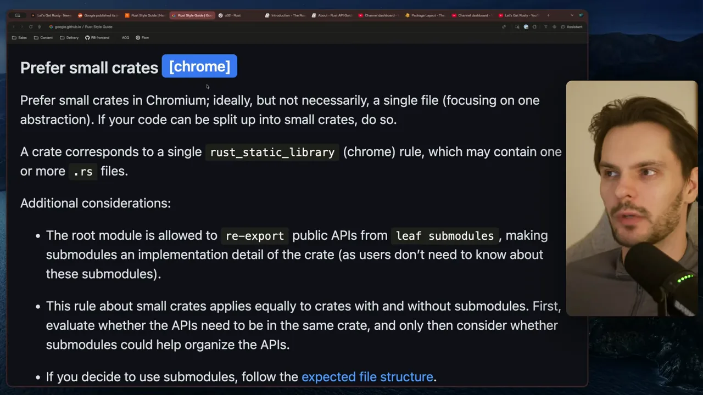
이유는 아래 화면 Rationale의 강조된 부분이에요. Chromium은 코드베이스가 거대해서, 잘게 나눈 라이브러리 단위가 병렬 컴파일과 빌드 캐시 성능을 높여 줘요. 발표자의 설명대로 Rust에서는 크레이트가 컴파일 단위예요. 크레이트가 많을수록 동시에 컴파일할 수 있는 단위가 많아지고, 하나를 고쳐도 다시 빌드할 범위가 줄어요.
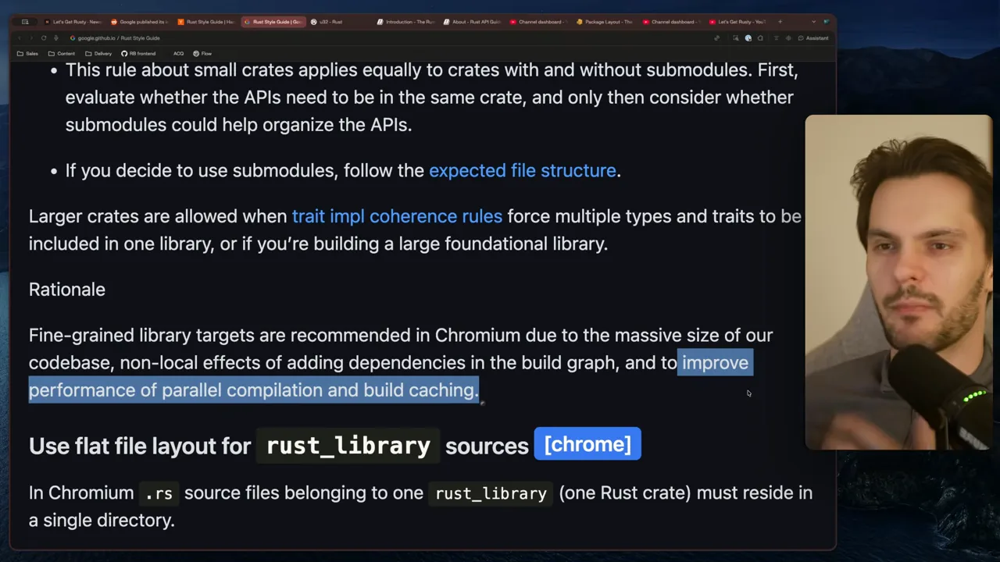
규칙 한눈에 보기
발표자가 다룬 규칙을 그 평가와 함께 모으면 이래요.
| 규칙 | 발표자 평가 | 핵심 이유 |
|---|---|---|
유연한 참조 받기 (&[T], &str …) | 바로 쓰세요 | 복사 없이 여러 형태의 데이터를 받아요 |
| 타입 별칭 대신 뉴타입 | 바로 쓰세요 | 같은 속 타입끼리 헷갈리는 실수를 컴파일러가 막아요 |
| 확인 후 unwrap 대신 패턴 매칭 | 바로 쓰세요 | 코드가 바뀌어도 패닉이 끼어들 틈이 없어요 |
단순한 실패는 Option | 의견이 갈려요 | 표준 라이브러리 관행이지만, 발표자는 Result로 의미를 구분하고 싶어 해요 |
Rc·Arc 기본으로 피하기 | 의견이 갈려요 | 실행 중 비용은 줄지만 입문자 적응이 힘들어요 |
공개 enum에 #[non_exhaustive] | 논쟁적이에요 | 컴파일러 검사를 잃지만 큰 조직의 버전 관리가 쉬워져요 |
| Chromium에서 작은 크레이트 | 논쟁적이에요 | 병렬 컴파일과 빌드 캐시에 유리해요 |